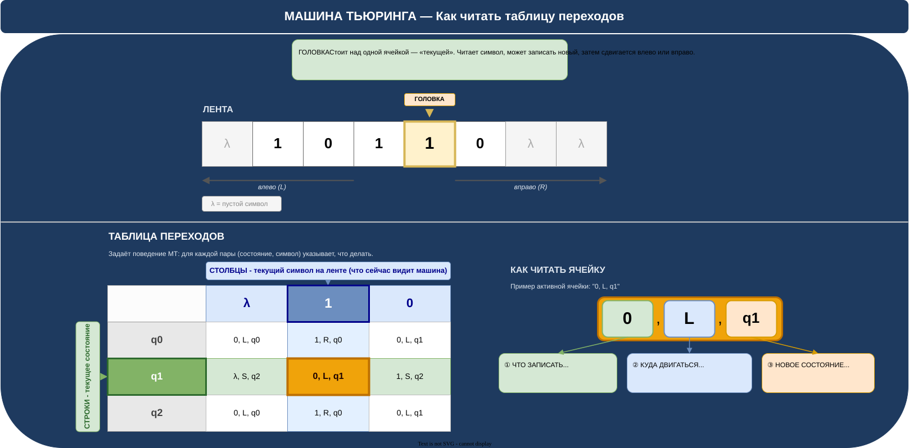

📝Введение
Машина Тьюринга (МТ) — абстрактная вычислительная модель, предложенная Аланом Тьюрингом в 1936 году. Несмотря на кажущуюся простоту, МТ способна выполнять любой алгоритм, который в принципе может быть формализован.
В заданиях ЕГЭ по информатике (задание 12) требуется проследить работу МТ по заданной таблице переходов и определить результат — какое слово окажется на ленте после остановки.
🎯 Что проверяет задание 12 ЕГЭ:
- Умение читать таблицу переходов МТ
- Умение пошагово прослеживать работу МТ
- Понимание понятий «состояние», «символ», «сдвиг головки»
🔧Компоненты машины Тьюринга
| Компонент | Описание | Обозначение |
|---|---|---|
| Лента (Tape) | Бесконечная в обе стороны последовательность ячеек. В каждой ячейке хранится один символ рабочего алфавита или пустой символ λ | λ 1 0 1 0 λ λ ... |
| Головка (Head) | Устройство чтения/записи. Всегда стоит над одной ячейкой — «текущей». Может читать символ, записывать новый, затем сдвигаться на одну ячейку | ▼ над текущей ячейкой |
| Состояние (State) | «Режим работы» управляющего устройства. В каждый момент машина находится в одном состоянии q | q0, q1, q2, ..., qH |
| Таблица переходов | Главный элемент МТ. Для каждой пары (состояние, символ) задаёт действие: что записать, куда сдвинуть головку, в какое состояние перейти | Матрица строк × столбцов |
| Начальное состояние | Состояние, с которого начинается работа МТ | q1 (или q0) |
| Состояние стоп | Особое состояние — попав в него, машина останавливается | qH (Halt) или ! (стоп) |
🖊️ Рабочий алфавит
Алфавит МТ — это набор символов, которые могут находиться на ленте. Всегда включает:
- λ (лямбда) / □ — пустой символ (ячейка не заполнена)
- Рабочие символы — например:
0,1,a,b
🗺️Наглядная схема
На схеме ниже показаны все компоненты МТ и структура таблицы переходов с пояснениями: строки — текущее состояние, столбцы — текущий символ, ячейки — инструкция.

📊Таблица переходов
Таблица переходов — главный элемент МТ, полностью задающий её поведение.
🔑 Структура таблицы:
- Строки = текущее состояние машины (q1, q2, ...)
- Столбцы = текущий символ под головкой на ленте (0, 1, λ, ...)
- Ячейка на пересечении = инструкция: что сделать на этом шаге
Пример таблицы переходов
Ниже приведена таблица МТ, прибавляющей 1 к двоичному числу (например, 101 → 110). Текущее состояние — q1, текущий символ — 1 (активная ячейка выделена оранжевым):
| Состояние ↓ Символ → |
0 | 1 | λ |
|---|---|---|---|
| q0 | 0, →, q0 | 1, →, q0 | λ, ←, q1 |
| q1 ◄ | 1, ●, qH | 0, ←, q1 | 1, ●, qH |
| qH | СТОП | СТОП | СТОП |
🔍Формат ячейки таблицы
Каждая ячейка таблицы содержит ровно три элемента, разделённых запятыми:
| Позиция | Что означает | Возможные значения |
|---|---|---|
| ① Новый символ | Символ, который будет записан в текущую ячейку (вместо того, что там было) | Любой символ алфавита: 0, 1, λ, a, b, ... |
| ② Направление | Куда сдвинуть головку после записи |
→ или R — вправо← или L — влево● или N — не двигать (стоп)
|
| ③ Новое состояние | В какое состояние перейти после этого шага | q0, q1, q2, ... или qH (стоп) |
Пример расшифровки записи 0, ←, q1:
- Записать символ 0 в текущую ячейку ленты
- Сдвинуть головку на одну ячейку влево
- Перейти в состояние q1
▶️Алгоритм работы МТ
📋 Пошаговый алгоритм одного шага МТ:
- Прочитать символ в текущей ячейке (под головкой)
- Найти строку с текущим состоянием в таблице переходов
- Найти столбец с прочитанным символом
- Прочитать ячейку на пересечении: (символ, направление, состояние)
- Записать новый символ в текущую ячейку
- Сдвинуть головку в указанном направлении
- Обновить текущее состояние
- Повторить с шага 1, если новое состояние ≠ qH (стоп)
qH (или другое указанное конечное состояние). Слово, оставшееся на ленте —
результат работы.
🧭 Удобный способ трассировки
При решении задач ЕГЭ рекомендуется вести таблицу трассировки:
| Шаг | Состояние | Символ под головкой | Действие (из таблицы) | Лента после шага | Позиция головки |
|---|---|---|---|---|---|
| 0 | q1 (старт) | ... | — | начальное слово | начальная |
| 1 | q? | ? | символ, сдвиг, сост. | ... | ... |
| ... | ... | ... | ... | ... | ... |
| N | qH (СТОП) | — | ОСТАНОВКА | результат | — |
💡Разобранный пример
Задача:
Машина Тьюринга работает с лентой, на которой записано двоичное число 101. Головка установлена над крайним левым символом. Начальное состояние — q0.
Таблица переходов:
| Сост. ↓ / Симв. → | 0 | 1 | λ |
|---|---|---|---|
| q0 | 0, →, q0 | 1, →, q0 | λ, ←, q1 |
| q1 | 1, ●, qH | 0, ←, q1 | 1, ●, qH |
| qH | СТОП | СТОП | СТОП |
Вопрос: Какое слово окажется на ленте после остановки МТ?
Решение (трассировка):
Начальное состояние ленты (↓ = позиция головки):
| Шаг | Состояние | Символ | Ячейка таблицы | Действие |
|---|---|---|---|---|
| 1 | q0 | 1 | 1, →, q0 |
Записать 1, сдвиг →, → q0. Лента: 101, головка над 0 |
| 2 | q0 | 0 | 0, →, q0 |
Записать 0, сдвиг →, → q0. Лента: 101, головка над 1 |
| 3 | q0 | 1 | 1, →, q0 |
Записать 1, сдвиг →, → q0. Лента: 101λ, головка над λ |
| 4 | q0 | λ | λ, ←, q1 |
Записать λ, сдвиг ←, → q1. Головка над последней 1 |
| 5 | q1 | 1 | 0, ←, q1 |
Записать 0 (было 1), сдвиг ←, → q1. Лента: 100 |
| 6 | q1 | 0 | 1, ●, qH |
Записать 1 (было 0), стоп, → qH. Лента: 110 |
| — | qH | — | СТОП | Машина остановилась |
110.
Машина прибавила 1 к двоичному числу 101 (5₁₀) и получила 110 (6₁₀). ✓
🎓Советы для ЕГЭ
✅ Как решать задание 12 шаг за шагом:
- Найдите начальное состояние — обычно указано в условии (q1 или q0)
- Зафиксируйте начальное положение головки — над каким символом стоит
- Ведите трассировку в столбик: состояние → символ → действие
- На каждом шаге: находите строку (состояние) и столбец (символ) в таблице
- Выполняйте действия строго по порядку: запись → сдвиг → смена состояния
- Останавливайтесь при qH и записывайте ответ с ленты
❌ Частые ошибки:
- Спутать строки и столбцы — строки = состояния, столбцы = символы
- Забыть записать символ перед сдвигом (иногда символ не меняется, но всё равно нужно проверить)
- Потерять позицию головки — отмечайте её на каждом шаге
- Не учесть символ λ (пустую ячейку) — она тоже является полноправным символом алфавита
- Остановиться не там — машина работает только до перехода в qH
⚡ Быстрые подсказки:
- Если в ячейке стоит
а, →, q— символ а может совпадать с тем, что уже на ленте (запись "ничего не меняет") - Обозначения направления:
Л / L / ←— влево,П / R / →— вправо,Н / N / ●— стоять - Пустой символ может обозначаться как
λ,□,_или пробелом — всё одно и то же - Состояние стоп обозначается как
qH,q!,STOPили выделяется в задаче особо
🔁 Типичный сценарий задачи ЕГЭ
| Дано | Найти | Алгоритм |
|---|---|---|
| Таблица переходов + начальное слово на ленте + начальная позиция + начальное состояние | Слово на ленте после остановки МТ | Пошаговая трассировка до состояния qH |